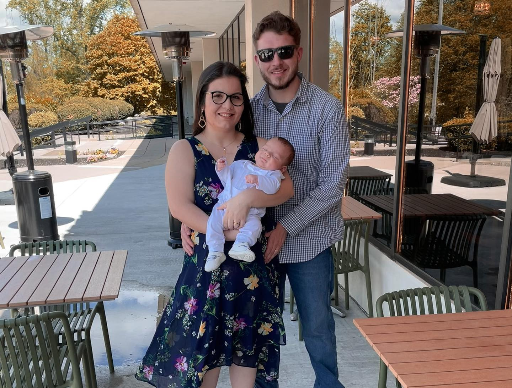
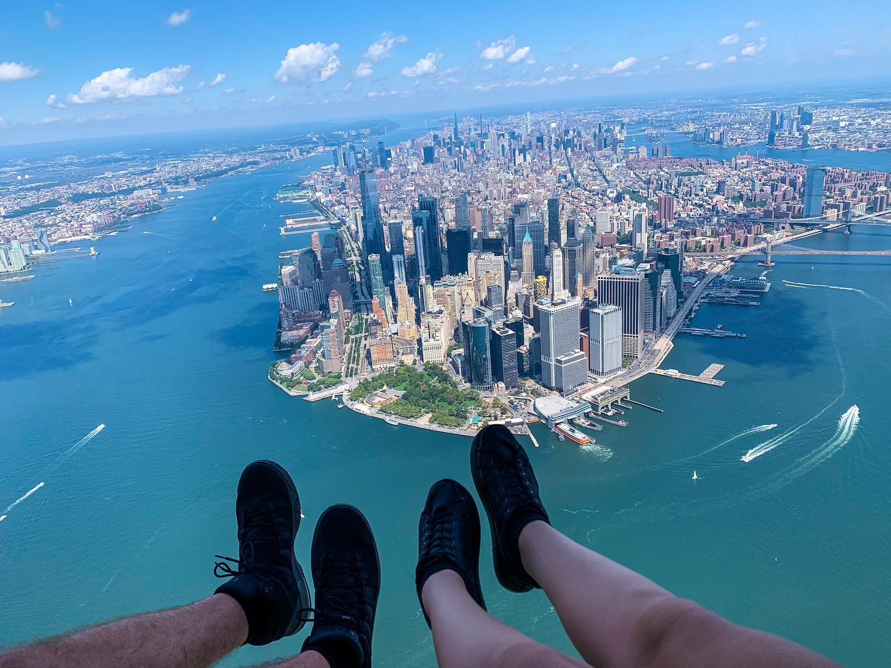

I've always been interested in computers, since I was younger I tried to download programs and browse the web without asking for help, trying to figure it out on my own. When I created a tumblr things got interesting, I used to spend hours messing with the theme section codes, trying to make it look the way I wanted. Of course, back then I had no idea what I was doing. When it was time for me to choose my career I felt pressured by my parents to choose fast and whem I talked about coding near some people around me I felt very discouraged.
Right now it seems the perfect time for me to embrace this path, I have amazing people around me that love and support my choices, specially my husband that believed I could do it and pushed me into it.
My Family

The most important thing in the world to me.
I met my husband early 2020 right when the pandemic started, we could see each other so over the weekends we would facetime for 6-7 hours straight, we fell in love instantly. We got married in 2021 and life was getting on track, we had to go through a stressful process for me to be able to live here permanent and when everything seemed to be getting on track I discoved I was pregnant. We always talked about being parents at a young age and this is how it was supposed to be, we welcomed our baby boy in March 2022. He is the cuttest and smartest baby I have ever met. At the hospital he was a celebrity because he is the 6th of a generation. Henry V and Henry VI are the world to me.
Passions
Tv Shows
Ok. First things first. Friends? Best tv show ever. Ever.
Now we can start.
I always liked tv shows, of all kinds.
But mostly sitcoms, drama or romantic ones.
Some good ones that I've watched are:
Baseball
I never really liked or understood baseball before, however my husband was always so passionate about the Red Sox that I decided to give it a go last season, it was the best thing I could have done, I totally fell in love for the game and the team. It was a perfect match! Now me and my husband love watching the games together and even going to Boston to watch the game at Fenway whenever we can. This year we were not so hot, but I know that next year is our year. GO SOX!
Life as an immigrant

Amazing view of Manhattan from above!
It is not easy to be an immigrant in the USA, as I am sure it is not easy anywhere. I was lucky enough to have people who helped me in my first year here, and guided me through everything I needed to do. (Like open a bank account, get a SSN, etc.) It was very recently when I started feeling like I belong here, before I had so many things back in my home country, but now everything I need and want is here, I have started a family here and this is all I have now. This is one of the reasons why I chose Coding Temple, I have never been employed in the United States, so I have no idea how the market works, how the interviews go and all that. I need someone to help me find my first job here, and I am sure I will be an amazing programmer and with your help I will find a job that suits me and I will be forever grateful. I am so excited to start, and look at that, I just coded for the very first time. YAY!
Carla Carney
Brazilian
Living in Connecticut
Coding student, mom, wife, tv show's lover, Red Sox fan, not necessarily in that order.
I was born and raised in Brazil, back home I studied Tourism and I got a bachelor's degree on it, after that I decided to do a flight attendant course (interesting fact: in Brazil you are required to do the course before you get a job, in the United States you get the job first). To get better job opportunitties I wanted to improve my English so in 2019 I came to the United States to do a student exchange program. The little I knew that that decision would change my life forever. Early 2020 I met my husband, we fell in love and got married in 2021. March 2022 we welcomed our baby boy into the world.